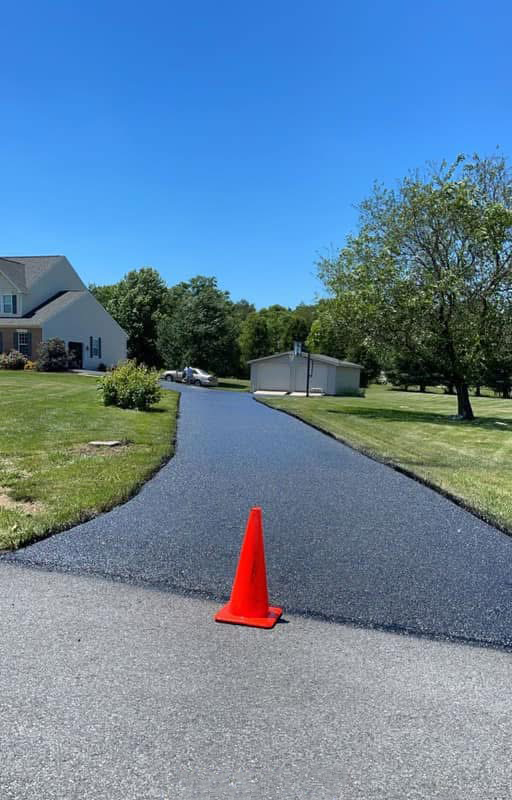

When to Sealcoat a New Asphalt Driveway

A new asphalt driveway is a big investment, and most homeowners want to protect it right away. That is a good instinct, but timing matters. Sealing fresh blacktop too early can do more harm than good. Whether your new drive is in Martinsburg, Inwood, or out past Gerrardstown, here is how to know when it is ready for its first coat.
Why new asphalt needs time first
Hot-mix asphalt is stone held together by a petroleum binder. When it is first laid and rolled, the binder still has light oils in it that need to work out of the surface. As they do, the asphalt hardens and its color shifts from a deep, wet-looking black to a slightly softer black.
Sealcoat put down too soon can trap those oils under the coat. The surface can stay soft longer than it should, scuff easily under tires, and the sealer may not bond well. Instead of protecting the driveway, an early coat can leave you with peeling and a surface that marks up every time someone turns the wheel.
How long to wait
New asphalt needs time to cure before the first sealcoat. The exact time depends on the weather after paving. Warm, sunny weather helps it cure, and cold weather slows it down, so we look at your driveway before the first coat.
Since sealcoating also needs warm, dry weather to cure, the first coat usually lands in late summer or early fall, the same window we talk about in our winter driveway guide. In the Eastern Panhandle that window can be short, so it pays to plan ahead rather than wait until the first cold snap.
Signs your driveway is ready
You do not need special tools to check. A cured driveway has a few things in common:
The color has softened. It still looks dark, but it has lost the glossy, just-paved shine.
It no longer scuffs easily. On a warm afternoon, turning the steering wheel while parked or setting down a kickstand does not leave a fresh mark.
Water runs off evenly. After a rain, the surface sheds water the way it was built to, without an oily sheen.
If you are not sure, we are glad to take a look. We can tell you whether the pavement is ready now or should wait another season.
Caring for new asphalt in the meantime
The first months are when fresh asphalt is softest. A few simple habits help it cure without damage:
Avoid turning the steering wheel while the car is standing still, especially on hot days. Keep heavy trucks, trailers, and campers off the driveway if you can, and do not park them in the same spot day after day. Put a board under motorcycle kickstands, jack stands, and trailer tongues. Stay off the edges, which are the least supported part of a new driveway. That matters on rural drives near Gerrardstown and Berkeley Springs, where there is no curb to hold the edge.
Clean up gas, oil, and other fluid spills quickly, since petroleum products soften asphalt. Small fixes now help the driveway hold its shape for years.
After the first coat
Once the first coat is down, we recommend sealcoating every 2 to 3 years as long as the pavement is still sound. Sealing more often than that is not better. Too many coats can build up, crack, and flake. Before each coat, any cracks should be cleaned and filled so the sealer is not just covering an open path for water. Our crack filling vs. sealcoating guide explains how the two work together.
You can read more about how we handle sealcoating on our sealcoating page, or see what a new drive involves on our driveway paving page. We work across the area, including Martinsburg and Inwood.
Not sure if it is time?
Call us at (304) 579-3872 and tell us when your driveway was paved. We will come out, look at the surface, and tell you honestly whether it is ready for its first coat. Estimates are free.